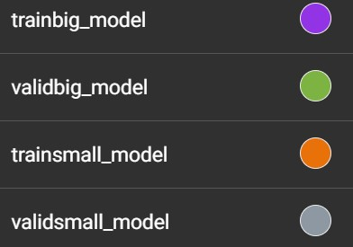
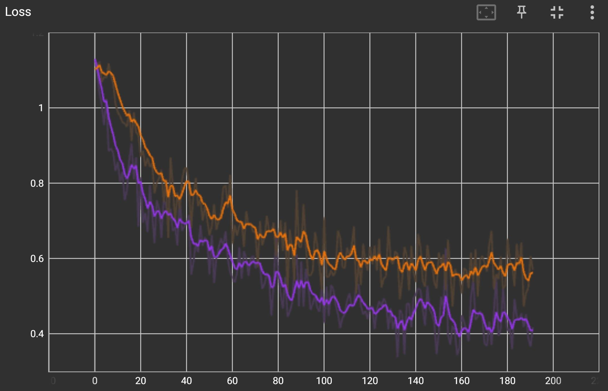
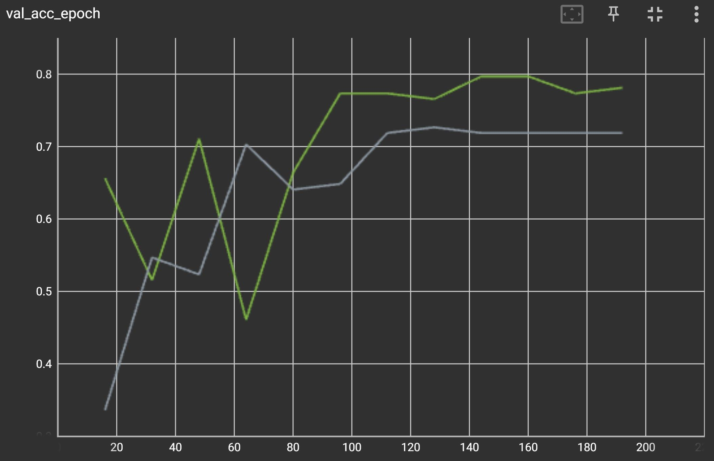

This is code I originally wrote for an assignment in my deep learning class. In order to post it on my public facing portfolio I’ve made several alterations and have changed the data set. The new data set I’m using is the “beans” data set from Hugging Face. This data set contains images of bean plant leaves with either no disease, Bean Rust, or Angular Leaf Spot. The leaf below has Bean Rust, identified by the small brown spots.
Code
Load Libraries
Code
from datasets import load_dataset, Imageimport numpy as npimport matplotlib.pyplot as pltfrom torchvision.transforms import Compose, ColorJitter, ToTensor, Resize, RandomHorizontalFlip, RandomVerticalFlip, RandomRotation, RandomAffinefrom torch.utils.data import Dataset, DataLoaderimport torch.nn.functional as Fimport torchfrom time import timeimport torch.utils.tensorboard as tbimport torch.nn.functional as Fdevice = torch.device('cuda'if torch.cuda.is_available() else'cpu')from torch import savefrom os import path
Make Data set Class
Here I turn the Hugging Hace data set into a PyTorch data set, which plays better with my previous CNN model and training set up. I perform a good amount of data augmentation including random flips and rotations, as well as jittering the brightness and contrast.
Code
# Inherits from pytorch datasetsclass MyDataset(Dataset):def__init__(self, data_path, train=True):# Only perform augmentation on the train dataif train:self.dataset = load_dataset("imagefolder", data_dir=data_path, drop_labels=False, split="train")self.dataset =self.dataset.map(self.img_resize, remove_columns=["image"], batched=True)# Here `set_transforms` performs the transforms on the fly to save memory (doesnt cache)self.dataset.set_transform(self.transforms)# the valid/test data only gets turned into a pytorch tensorelse:self.dataset = load_dataset("imagefolder", data_dir=data_path, drop_labels=False, split="test")self.dataset =self.dataset.map(self.img_resize, remove_columns=["image"], batched=True)self.dataset.set_transform(self.test_transform)def transforms(self, imgs): augment = Compose([ RandomHorizontalFlip(p=0.5), RandomVerticalFlip(p=0.5), ColorJitter(brightness=0.1, contrast=0.1, saturation=0.1, hue=0), RandomRotation(degrees=45), RandomAffine(degrees=10), ToTensor() ]) imgs["pixel_values"] = [augment(image) for image in imgs["pixel_values"]]return imgsdef test_transform(self, imgs): augment = Compose([ToTensor()]) imgs["pixel_values"] = [augment(image) for image in imgs["pixel_values"]]return imgsdef img_resize(self, imgs):# Resize the images to save on memory usage imgs["pixel_values"] = [image.convert("RGB").resize((100,100)) for image in imgs["image"]]return imgsdef__getitem__(self, index): data =self.dataset[index]# Make the labels one hot tensors w/data type float label = F.one_hot(torch.tensor(data["label"]), num_classes=3)return data["pixel_values"], label.float()def__len__(self):returnlen(self.dataset)#img = bean_data_train[0]["pixel_values"]#plt.imshow(np.transpose(img, (1,2,0)))
Build the CNN
Here I build a pretty simply CNN with an initial layer with kernel size 7. The following layers can be added as “Blocks” for easy customization of channel numbers and network depth.
Code
"""CNN class - Can take layers argument to define number of channels and depth - Number of input channels will always be 3 - Currently the first layer is hardcoded with kernel size 7, and stride 2 I think this should be reduced to 5 or even 3. - The class Block defines a block of 2 conv layers. This could be extended to 3 and include a skip. Could also include params for kernal size and striding - Normalization is performed here instead of in Utils, I randomly entered the mean and sdev so this may impact performance on the bean data set"""class ConvoClassifier(torch.nn.Module):class Block(torch.nn.Module):def__init__(self, n_input, n_output, stride=1):super().__init__()# Defines a two layer block with stride in first layer only, batch norm after eachself.net = torch.nn.Sequential(# Only the first layer is strided, can adjust this in the loop in the init method torch.nn.Conv2d(n_input, n_output, kernel_size=3, padding=1, stride=stride), torch.nn.ReLU(), torch.nn.Conv2d(n_output, n_output, kernel_size=3, padding=1), torch.nn.BatchNorm2d(n_output), torch.nn.ReLU() )def forward(self, x):returnself.net(x)def__init__(self, layers=[32, 64, 128], n_input_channels=3, n_classes=3):super().__init__()# Inital layer with kernal size 7, the max pool appears to increase accuracy on validation set L = [torch.nn.Conv2d(n_input_channels, layers[0], kernel_size=7, padding=3, stride=2), torch.nn.ReLU(), torch.nn.MaxPool2d(kernel_size=3, stride=2, padding=1)] c = layers[0]# Build network from list of layersfor l in layers:# can adjust stride here L.append(self.Block(c, l, stride=2)) c = lself.network = torch.nn.Sequential(*L)# Linear layer at end for the 3 classification labelsself.classifier = torch.nn.Linear(c, n_classes)# Mean and standard dev of color channels accross the entire training setself.norm = torchvision.transforms.Normalize( mean=[0.233, 0.298, 0.256], std=[0.199, 0.118, 0.201])def forward(self, x):# Normalize normx =self.norm(x)# Compute the features z =self.network(normx)# Global average pooling z = z.mean(dim=[2, 3])# Classifyreturnself.classifier(z)# Save the model with epoch number and message/name of model (for checkpoints)def save_model(model, message, epoch): name = message +'_'+str(epoch) +'_'+'det.th'from torch import savefrom os import pathreturn save(model.state_dict(), path.join(path.dirname(path.abspath(__file__)), name))def load_model(model_name):from torch import loadfrom os import path r = ConvoClassifier() r.load_state_dict(load(path.join(path.dirname( path.abspath(__file__)), model_name), map_location='cpu'))return r
Train the Model
The main training loop with arguments that can be passed through the command line. I use tensor board to monitor training loss and validation accuracy.
Code
#from .models import ConvoClassifier, save_model, load_model#from .utils import MyDataset"""Running tensorboard - launch terminal w/deeplearning virual env - run python -m tensorboard.main --logdir=runs - open in browser - enabels visualization of training loss and accuracy after each batch and validation accuracy after each epoch""""""Main training loop - Takes training arguments - log_dir: directory of logs for tensorboard - run_info: short description of run for identification in tensorboard - lr: learning rate - ep: number of epochs - layers: takes multiple int values and constructs a list used for construction of model. Each number is number of channels and length of list is number of layers - Prints time and validation accuracy to consol after each epoch. Saves model at end - Note: each "layer" is a block of 2 convolutional layers, see models.py - Should add ability to customize learning rate schedule, currently decaying around 6 epochs gives good results """def load_data(dataset_path, num_workers=0, batch_size=256, train=True): dataset = MyDataset(dataset_path, train)return DataLoader(dataset, num_workers=num_workers, batch_size=batch_size, shuffle=True, drop_last=True)def train(args): start = time()# model constructed here model = ConvoClassifier(args.layer_list, args.num_classes).to(device)# set up logger with the run info name train_logger, valid_logger =None, Noneif args.log_dir isnotNone: train_dir ="train"+ args.run_info valid_dir ="valid"+ args.run_info train_logger = tb.SummaryWriter(path.join(args.log_dir, train_dir)) valid_logger = tb.SummaryWriter(path.join(args.log_dir, valid_dir))# Choice of optimizer, adam working better so far# optimizer = torch.optim.SGD(model.parameters(), lr=0.001, momentum=0.9) optimizer = torch.optim.Adam(model.parameters(), lr=args.learn_rate)# LR scheduler, will want to eventually add ability to customize args for this scheduler = torch.optim.lr_scheduler.StepLR( optimizer, step_size=6, gamma=0.2) step =0 train_data = load_data(args.data_dir,0,args.batch_size,True) val_data = load_data(args.data_dir,0,args.batch_size,False)# Main loopfor epoch inrange(args.num_epochs): startepoch = time() total_loss =0# Make sure things are set to training mode model.train()for i, (x, y) inenumerate(train_data): x = x.to(device) y = y.to(device) output = model(x) l = F.cross_entropy(output, y) optimizer.zero_grad() l.backward() optimizer.step() total_loss += l# compute accuracy on training batch, need to get it back to CPU and change to numpy array acc = (output.argmax(1).type_as(y) == y.argmax(1)).float().detach().cpu().numpy() acc = np.mean(acc) train_logger.add_scalar("Loss", l, global_step=step)#train_logger.add_scalar("acc", acc, global_step=step) step +=1# Test model on validation set after training epoch, make sure to set to eval mode model.eval() val_acc = np.array([])for i, (x, y) inenumerate(val_data): x = x.to(device) y = y.to(device) output = model(x)# compute accuracy on validation set, need to get it back to CPU and change to numpy array acc = (output.argmax(1).type_as(y) == y.argmax(1)).float().detach().cpu().numpy() acc = np.mean(acc) val_acc = np.append(val_acc, acc) valid_logger.add_scalar("val_acc_epoch", np.mean(val_acc), global_step=step)# End of epoch, print validation accurcy and epoch time endepoch = time() scheduler.step()print(np.mean(val_acc))print("epochtime", endepoch-startepoch)# print total time of model and save end = time()print("total time", end-start) save_model(model, args.run_info, args.num_epochs)"""Arguments: - log_dir: directory of logs for tensorboard - run_info: short description of run for identification in tensorboard - lr: learning rate - ep: number of epochs - layers: takes multiple int values and constructs a list used for construction of model. Each number is number of channels and length of list is number of layers"""if__name__=='__main__':import argparse parser = argparse.ArgumentParser() parser.add_argument('--log_dir', default='runs') parser.add_argument('-n', '--run_info', type=str) parser.add_argument('-lr', '--learn_rate', type=float, default=0.0001) parser.add_argument('-ep', '--num_epochs', type=int, default=4)# layer list requires at least one number. Multiple numbers seperated by a single space parser.add_argument('-layers', '--layer_list', nargs='+',type=int, default=[32, 64, 128]) parser.add_argument('-data', '--data_dir', type=str, default='../../beans') parser.add_argument('-c', '--num_classes', type=int, default=3 ) parser.add_argument('-bs', '--batch_size', type=int, default=256) args = parser.parse_args() train(args)
Results
Command line calls
I try training two models with different numbers of channels in each layer. Which will perform better?
My initial results didn’t seem too bad! This was done with a very minimal amount of “Graduate student descent” so the model has a ton of room for improvement.
The smaller model is in orange and the larger model is in purple. The larger model has lower training loss after 12 epochs but does it have better accuracy?


Validation Accuracy
Here the larger model is in green and the smaller model is in grey. Looks like the larger model is a bit better! However after about 9 epochs the accuracy starts to plateu. I’d want to do some graduate student descent to get that accuracy up (But not push it too hard as I don’t want to over fit to the validation set). Also, if this were a more serious project I’d need to have a hold out test set that I only try at the very end of training. (No peeking!)

Source Code
---title: "Basic Convolutional Neural Network For Classification"author: "Dave Hein"date: "2023-06-30"categories: [Python, Deep learning]image: "beans.jpg"format: html: toc: true code-fold: show code-tools: true---```{=html}<style type="text/css">code.r{ font-size: 14px;}td { font-size: 12px;}code.python{ font-size: 14px;}pre { font-size: 12px;}</style>```## IntroductionThis is code I originally wrote for an assignment in my deep learning class. In order to post it on my public facing portfolio I've made several alterations and have changed the data set. The new data set I'm using is the "beans" data set from Hugging Face. This data set contains images of bean plant leaves with either no disease, Bean Rust, or Angular Leaf Spot. The leaf below has Bean Rust, identified by the small brown spots.{fig-align="center" width="244"}## Code### Load Libraries```{r, warning=FALSE, message=FALSE, include=FALSE}library(tidyverse)library(reticulate)library(rmarkdown)library(knitr)use_python("C:/Users/dave/anaconda3/envs/dl_hw_06/python.exe", required =TRUE)#knitr::opts_chunk$set(python.reticulate = FALSE)#Sys.which("python")#py_config()#py_discover_config()``````{python, eval = FALSE}from datasets import load_dataset, Imageimport numpy as npimport matplotlib.pyplot as pltfrom torchvision.transforms import Compose, ColorJitter, ToTensor, Resize, RandomHorizontalFlip, RandomVerticalFlip, RandomRotation, RandomAffinefrom torch.utils.data import Dataset, DataLoaderimport torch.nn.functional as Fimport torchfrom time import timeimport torch.utils.tensorboard as tbimport torch.nn.functional as Fdevice = torch.device('cuda'if torch.cuda.is_available() else'cpu')from torch import savefrom os import path```### Make Data set ClassHere I turn the Hugging Hace data set into a PyTorch data set, which plays better with my previous CNN model and training set up. I perform a good amount of data augmentation including random flips and rotations, as well as jittering the brightness and contrast.```{python, eval = FALSE}# Inherits from pytorch datasetsclass MyDataset(Dataset):def__init__(self, data_path, train=True):# Only perform augmentation on the train dataif train:self.dataset = load_dataset("imagefolder", data_dir=data_path, drop_labels=False, split="train")self.dataset =self.dataset.map(self.img_resize, remove_columns=["image"], batched=True)# Here `set_transforms` performs the transforms on the fly to save memory (doesnt cache)self.dataset.set_transform(self.transforms)# the valid/test data only gets turned into a pytorch tensorelse:self.dataset = load_dataset("imagefolder", data_dir=data_path, drop_labels=False, split="test")self.dataset =self.dataset.map(self.img_resize, remove_columns=["image"], batched=True)self.dataset.set_transform(self.test_transform)def transforms(self, imgs): augment = Compose([ RandomHorizontalFlip(p=0.5), RandomVerticalFlip(p=0.5), ColorJitter(brightness=0.1, contrast=0.1, saturation=0.1, hue=0), RandomRotation(degrees=45), RandomAffine(degrees=10), ToTensor() ]) imgs["pixel_values"] = [augment(image) for image in imgs["pixel_values"]]return imgsdef test_transform(self, imgs): augment = Compose([ToTensor()]) imgs["pixel_values"] = [augment(image) for image in imgs["pixel_values"]]return imgsdef img_resize(self, imgs):# Resize the images to save on memory usage imgs["pixel_values"] = [image.convert("RGB").resize((100,100)) for image in imgs["image"]]return imgsdef__getitem__(self, index): data =self.dataset[index]# Make the labels one hot tensors w/data type float label = F.one_hot(torch.tensor(data["label"]), num_classes=3)return data["pixel_values"], label.float()def__len__(self):returnlen(self.dataset)#img = bean_data_train[0]["pixel_values"]#plt.imshow(np.transpose(img, (1,2,0)))```### Build the CNNHere I build a pretty simply CNN with an initial layer with kernel size 7. The following layers can be added as "Blocks" for easy customization of channel numbers and network depth.```{python, eval = FALSE}"""CNN class - Can take layers argument to define number of channels and depth - Number of input channels will always be 3 - Currently the first layer is hardcoded with kernel size 7, and stride 2 I think this should be reduced to 5 or even 3. - The class Block defines a block of 2 conv layers. This could be extended to 3 and include a skip. Could also include params for kernal size and striding - Normalization is performed here instead of in Utils, I randomly entered the mean and sdev so this may impact performance on the bean data set"""class ConvoClassifier(torch.nn.Module):class Block(torch.nn.Module):def__init__(self, n_input, n_output, stride=1):super().__init__()# Defines a two layer block with stride in first layer only, batch norm after eachself.net = torch.nn.Sequential(# Only the first layer is strided, can adjust this in the loop in the init method torch.nn.Conv2d(n_input, n_output, kernel_size=3, padding=1, stride=stride), torch.nn.ReLU(), torch.nn.Conv2d(n_output, n_output, kernel_size=3, padding=1), torch.nn.BatchNorm2d(n_output), torch.nn.ReLU() )def forward(self, x):returnself.net(x)def__init__(self, layers=[32, 64, 128], n_input_channels=3, n_classes=3):super().__init__()# Inital layer with kernal size 7, the max pool appears to increase accuracy on validation set L = [torch.nn.Conv2d(n_input_channels, layers[0], kernel_size=7, padding=3, stride=2), torch.nn.ReLU(), torch.nn.MaxPool2d(kernel_size=3, stride=2, padding=1)] c = layers[0]# Build network from list of layersfor l in layers:# can adjust stride here L.append(self.Block(c, l, stride=2)) c = lself.network = torch.nn.Sequential(*L)# Linear layer at end for the 3 classification labelsself.classifier = torch.nn.Linear(c, n_classes)# Mean and standard dev of color channels accross the entire training setself.norm = torchvision.transforms.Normalize( mean=[0.233, 0.298, 0.256], std=[0.199, 0.118, 0.201])def forward(self, x):# Normalize normx =self.norm(x)# Compute the features z =self.network(normx)# Global average pooling z = z.mean(dim=[2, 3])# Classifyreturnself.classifier(z)# Save the model with epoch number and message/name of model (for checkpoints)def save_model(model, message, epoch): name = message +'_'+str(epoch) +'_'+'det.th'from torch import savefrom os import pathreturn save(model.state_dict(), path.join(path.dirname(path.abspath(__file__)), name))def load_model(model_name):from torch import loadfrom os import path r = ConvoClassifier() r.load_state_dict(load(path.join(path.dirname( path.abspath(__file__)), model_name), map_location='cpu'))return r```### Train the ModelThe main training loop with arguments that can be passed through the command line. I use tensor board to monitor training loss and validation accuracy.```{python, eval = FALSE}#from .models import ConvoClassifier, save_model, load_model#from .utils import MyDataset"""Running tensorboard - launch terminal w/deeplearning virual env - run python -m tensorboard.main --logdir=runs - open in browser - enabels visualization of training loss and accuracy after each batch and validation accuracy after each epoch""""""Main training loop - Takes training arguments - log_dir: directory of logs for tensorboard - run_info: short description of run for identification in tensorboard - lr: learning rate - ep: number of epochs - layers: takes multiple int values and constructs a list used for construction of model. Each number is number of channels and length of list is number of layers - Prints time and validation accuracy to consol after each epoch. Saves model at end - Note: each "layer" is a block of 2 convolutional layers, see models.py - Should add ability to customize learning rate schedule, currently decaying around 6 epochs gives good results """def load_data(dataset_path, num_workers=0, batch_size=256, train=True): dataset = MyDataset(dataset_path, train)return DataLoader(dataset, num_workers=num_workers, batch_size=batch_size, shuffle=True, drop_last=True)def train(args): start = time()# model constructed here model = ConvoClassifier(args.layer_list, args.num_classes).to(device)# set up logger with the run info name train_logger, valid_logger =None, Noneif args.log_dir isnotNone: train_dir ="train"+ args.run_info valid_dir ="valid"+ args.run_info train_logger = tb.SummaryWriter(path.join(args.log_dir, train_dir)) valid_logger = tb.SummaryWriter(path.join(args.log_dir, valid_dir))# Choice of optimizer, adam working better so far# optimizer = torch.optim.SGD(model.parameters(), lr=0.001, momentum=0.9) optimizer = torch.optim.Adam(model.parameters(), lr=args.learn_rate)# LR scheduler, will want to eventually add ability to customize args for this scheduler = torch.optim.lr_scheduler.StepLR( optimizer, step_size=6, gamma=0.2) step =0 train_data = load_data(args.data_dir,0,args.batch_size,True) val_data = load_data(args.data_dir,0,args.batch_size,False)# Main loopfor epoch inrange(args.num_epochs): startepoch = time() total_loss =0# Make sure things are set to training mode model.train()for i, (x, y) inenumerate(train_data): x = x.to(device) y = y.to(device) output = model(x) l = F.cross_entropy(output, y) optimizer.zero_grad() l.backward() optimizer.step() total_loss += l# compute accuracy on training batch, need to get it back to CPU and change to numpy array acc = (output.argmax(1).type_as(y) == y.argmax(1)).float().detach().cpu().numpy() acc = np.mean(acc) train_logger.add_scalar("Loss", l, global_step=step)#train_logger.add_scalar("acc", acc, global_step=step) step +=1# Test model on validation set after training epoch, make sure to set to eval mode model.eval() val_acc = np.array([])for i, (x, y) inenumerate(val_data): x = x.to(device) y = y.to(device) output = model(x)# compute accuracy on validation set, need to get it back to CPU and change to numpy array acc = (output.argmax(1).type_as(y) == y.argmax(1)).float().detach().cpu().numpy() acc = np.mean(acc) val_acc = np.append(val_acc, acc) valid_logger.add_scalar("val_acc_epoch", np.mean(val_acc), global_step=step)# End of epoch, print validation accurcy and epoch time endepoch = time() scheduler.step()print(np.mean(val_acc))print("epochtime", endepoch-startepoch)# print total time of model and save end = time()print("total time", end-start) save_model(model, args.run_info, args.num_epochs)"""Arguments: - log_dir: directory of logs for tensorboard - run_info: short description of run for identification in tensorboard - lr: learning rate - ep: number of epochs - layers: takes multiple int values and constructs a list used for construction of model. Each number is number of channels and length of list is number of layers"""if__name__=='__main__':import argparse parser = argparse.ArgumentParser() parser.add_argument('--log_dir', default='runs') parser.add_argument('-n', '--run_info', type=str) parser.add_argument('-lr', '--learn_rate', type=float, default=0.0001) parser.add_argument('-ep', '--num_epochs', type=int, default=4)# layer list requires at least one number. Multiple numbers seperated by a single space parser.add_argument('-layers', '--layer_list', nargs='+',type=int, default=[32, 64, 128]) parser.add_argument('-data', '--data_dir', type=str, default='../../beans') parser.add_argument('-c', '--num_classes', type=int, default=3 ) parser.add_argument('-bs', '--batch_size', type=int, default=256) args = parser.parse_args() train(args)```## Results### Command line callsI try training two models with different numbers of channels in each layer. Which will perform better?`python -m run_beans -n small_model -bs 128 -ep 12 -layers 32 64 128``python -m run_beans -n big_model -bs 128 -ep 12 -layers 64 128 256`### Training LossMy initial results didn't seem too bad! This was done with a very minimal amount of "Graduate student descent" so the model has a ton of room for improvement.The smaller model is in orange and the larger model is in purple. The larger model has lower training loss after 12 epochs but does it have better accuracy?{fig-align="center" width="225"}{fig-align="center" width="850"}### Validation AccuracyHere the larger model is in green and the smaller model is in grey. Looks like the larger model is a bit better! However after about 9 epochs the accuracy starts to plateu. I'd want to do some graduate student descent to get that accuracy up (But not push it too hard as I don't want to over fit to the validation set). Also, if this were a more serious project I'd need to have a hold out test set that I only try at the very end of training. (No peeking!){fig-align="center" width="850"}